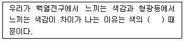
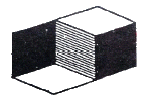
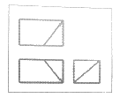
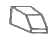
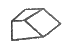

시각디자인산업기사 (2013-06-02 기출문제)
1과목: 색채학
1. 다음 중 다른 것에 비하여 붉은색 계통의 색채를 띄는 조명은?
- 백열등
- 수은등
- 자연광
- 형광등
(정답률: 53%)

2. 져드(D.B. Judd)가 정리한 색채조화의 원리로 옳은 것은?
- 질서성 - 다양성 - 균형성 - 친근성
- 질서성 - 유사성 - 공통성 - 명료성
- 친근성 - 전통성 - 명백성 - 균형성
- 조화성 - 친근성 - 개성 - 균형성
(정답률: 84%)
3. 색채의 강약감(순도의 높고 낮음)과 주로 관계되는 것은?
- 명도단계
- 채도단계
- 색상단계
- 색광표시
(정답률: 63%)
4. 미술 교육자의 한 사람으로서 12 색상환을 기본으로 2색, 3색, 4색 조화 등을 주장한 사람은?
- 스펜서(Spencer)
- 요하네스 이텐(Johannes Itten)
- 루드(Rood)
- 비렌(Birren)
(정답률: 50%)
5. 다음 중 괄호 안의 내용으로 옳은 것은?

- 순응성
- 연색성
- 항상성
- 고유성
(정답률: 60%)
6. 물체색의 3속성(색상, 명도, 채도)과 빛의 3속성(휘도, 순도, 주파장)의 관계가 옳게 대응된 것은?
- 주파장 → 색상, 휘도 → 명도, 순도 → 채도
- 주파장 → 명도, 휘도 → 색상, 순도 → 채도
- 주파장 → 채도, 휘도 → 명도, 순도 → 색상
- 주파장 → 색상, 휘도 → 채도, 순도 → 명도
(정답률: 67%)
7. 색채계획 시 고려해야 할 사항 중 옳은 것은?
- 낮은 명도의 색을 위쪽에, 높은 명도의 색상을 아래쪽에 칠하면 안정감이 있다.
- 무게감은 채도에서 많은 영향을 준다.
- 난색은 비교적 진출의 성향을 갖고, 한색은 후퇴의 성향을 갖는다.
- 침착의 느김은 난색계의 채도가 높은 색에서 주로 느낀다.
(정답률: 84%)
8. 다음 중 명시성(明視性)이 가장 높은 것은?
- 흑색바탕에 황색 글씨
- 적색바탕에 흑색 글씨
- 백색바탕에 흑색 글씨
- 흑색바탕에 백색 글씨
(정답률: 58%)
9. 3색 이상 다른 밝기를 가진 회색을 단계적으로 배열했을 때 명도가 높은 회색과 접하고 있는 부분은 어둡게 보이고 반대로 명도가 낮은 회색과 접하고 있는 부분은 밝게 보인다. 이들 경계에서 보이는 대비 현상은?
- 보색대비
- 채도대비
- 연변대비
- 전쟁대비
(정답률: 62%)
10. 다음 중 명도가 가장 낮은 색은?
- 주황
- 파랑
- 연두
- 노랑
(정답률: 63%)
11. 다음 중 중간 혼합을 설명한 것은?
- 2개 이상으 색을 혼합할 때 혼합하는 색의 수가 많을수록 혼합 결과 색의 명도가 낮아진다.
- 2개 이상의 색을 혼합할 때 혼합하는 색의 수가 많을수록 혼합 결과 색의 명도가 높아진다.
- 2개 이상의 색을 혼합할 때 혼합하는 색의 수에 관계없이 혼합 결과 색의 명도가 혼합하는 색의 평균 명도가 된다.
- 색 면적과 거리에 비례하며 눈의 망막위에서 혼합되는 생리적 현상이다.
(정답률: 57%)
12. 다음 중 색광혼합의 결과로 틀린 것은?
- 빨강(Red)+녹색(Green) = 노랑(Yellow)
- 녹색(Green)+파랑(Blue) = 시안(Cyan)
- 파랑(Blue)+빨강(Red) = 녹색(Green)
- 빨강(Red)+녹색(Green)+파랑(Blue) = 흰색(White)
(정답률: 67%)
13. 한국산업규격 KS A 0011로 규정된 관용색 이름이 아닌 것은?
- 자주
- 벽돌색
- 살색
- 호박색
(정답률: 32%)
14. 오스트발트의 등색상 삼각형에서 등흑계열의 조화에 해당하는 것은?
- pn - pi - pe
- ec - ic - nc
- ca - ge - li
- gc - lc - lg
(정답률: 69%)
15. 먼셀 색채기호 "5R 4/14", "N6.0"에 관한 내용으로 옳은 것은?
- 명도는 4
- 순도는 6.0
- 색상은 14
- 채도는 5R
(정답률: 91%)
16. 한국의 전통색의 상징에 대한 설명으로 옳은 것은?
- 적색은 남쪽을 상징한다.
- 흰색은 중앙을 상징한다.
- 황색은 동쪽을 상징한다.
- 청색은 북쪽을 상징한다.
(정답률: 56%)
17. 헤링의 색각(色覺)이론에서 주장된 4원색은?
- 빨강, 파랑, 흰색, 검정
- 빨강, 파랑, 노랑, 녹색
- 빨강, 파랑, 노랑, 자주
- 빨강, 파랑, 노랑, 회색
(정답률: 74%)
18. Munsell표색계에서 5YR 6/12"로 표시된 색명은?
- 주황
- 자주
- 빨강
- 다홍
(정답률: 86%)
19. 물체의 색이 한 가지가 아닌 여러 가지 색으로 보이는 이유는?
- 물체의 표면에서 반사하는 빛의 분광분포 때문
- 가시광선뿐만 아니라 적외선이나 자외선이 부분적으로 눈에 지각되기 때문
- 물체가 고유색을 가지고 있어서 색의 차이가 눈에 지각되기 때문
- 보는 사람의 느낌에 따라 물체의 색이 다르게 보이기 때문
(정답률: 58%)
20. 오스트발트의 색입체를 중심축에 대하여 수평으로 자를 경우 나타나는 면에 대한 설명이 옳은 것은?
- 흰색의 양만 동일한 색상 면이 된다.
- 검정색의 양만 동일한 색상 면이 된다.
- 흰색과 검정색의 양이 동일한 등가색환이 된다.
- 무채색만 나타난다.
(정답률: 43%)
2과목: 인쇄 및 사진기법
21. 특수한 인화기법으로 현상 중의 필름에 적당한 빛을 쬐어, 한 장의 화면에 음화와 양화가 함께 나타나게 하는 효과를 얻을 수 있는 기법은?
- 디포메이션
- 솔라리제이션
- 더블 프린트
- 포토 몽타주
(정답률: 75%)
22. 광원의 종류 중 파장 영역을 가장 옳게 나타낸 것은?
- 자외선 : 1000 ~ 2000nm
- 가시광선 : 380 ~ 780nm
- 적외선 : 100 ~ 400nm
- 전파 : 10 ~ 400nm
(정답률: 83%)
23. 빛의 방향은 물체의 모양을 결정한다. 주광원의 위치에 따라 분류되지 않는 광선은?
- 정면 광선
- 하부 광선
- 범프 광선
- 정상부 광선
(정답률: 74%)
24. 한 권의 책 분량으로 쪽모음한 제책 공정은?
- 접기
- 쪽맞추기
- 실매기
- 고르기
(정답률: 83%)
25. 서체의 활용 시 고려해야 할 사항과 거리가 먼 것은?
- 서체의 구조 및 종류
- 서체의 느낌과 가독성
- 활용 서체 종류의 통일화
- 서체의 척도와 식자방식
(정답률: 19%)
26. 일안 리플렉스 카메라으 특징에 해당되지 않는 것은?
- 파인더를 통해 필름에 비치는 상과 같은 상을 얻을 수 있다.
- 어떤 교환렌즈를 써도 그 효과를 직접 볼 수 있다.
- 초점이 맞는 범위를 확인하면서 찍을 수 있다.
- 시차가 생긴다.
(정답률: 47%)
27. 지분트러블에 관한 설명 중 틀린 것은?
- 재단지분은 인쇄물의 가장자리 부분에 발생한다.
- 재단지분은 1번 인쇄 유니트에서 가장 많이 발생한다.
- 코팅지분은 블랭킷 표면에 남아 파일링(piling)을 일으킨다.
- 뜯김(picking)은 인쇄물의 비화선부에 발생한다.
(정답률: 38%)
28. 카메라에 일반적으로 표시된 조리개 번호(f number)가 옳은 것은?(오류 신고가 접수된 문제입니다. 반드시 정답과 해설을 확인하시기 바랍니다.)
- 1.4, 2.2, 4, 5.6, 8, 11, 16 ...
- 1.4, 2.8, 4, 5.6, 11, 16 ...
- 1.4, 2.8, 4, 8, 5.6, 11, 16 ...
- 1.4, 2, 2.8, 5.6, 8, 11, 16 ...
(정답률: 12%)
29. 다음 중 포장 재료로 가장 많이 사용되는 인쇄용지는?
- 상질지
- 크라프트지
- 하급지
- 방청지
(정답률: 67%)
30. 필름에 대한 설명 중 옳은 것은?
- 135필름의 규격은 36mm×24mm 이다.
- 120필름의 규격은 120mm×120mm 이다.
- 220필름의 규격은 120mm×240mm 이다.
- 쉬트필름의 규격은 8cm×10cm 이다.
(정답률: 50%)
31. 사진 블록판 제판에서 화선부를 부식액에 견디도록 하기 위하여 처리하는 공정은?
- 에칭(ecting)
- 버닝(buring)
- 친수화 처리
- 연마
(정답률: 35%)
32. 렌즈를 구성하는 기본적인 특성과 거리가 먼 것은?
- 초점거리
- 렌즈의 밝기
- 렌즈의 화각
- 렌즈의 크기
(정답률: 55%)
33. 석양을 주광용(daylight type)컬러 필름으로 촬영하였더니 붉은 색조가 많이 나왔다. 가장 큰 이유는?
- 석양은 색온도가 낮기 때문이다.
- 석양은 색온도가 높기 때문이다.
- 사용 년도가 지난 필름을 사용했기 때문이다.
- 석양은 단파장이기 때문이다.
(정답률: 28%)
34. 가색 삼원색과 감색 삼원색은 어떤 관계가 있는가?
- 동색
- 보색
- 측색
- 무채색
(정답률: 74%)
35. 인쇄기의 피더 기능이 좋지 않아 발생되는 현상 중 그 설명이 틀린 것은?
- 생산력 저하
- 파지발생이 적음
- 잉크 착육량이 불균등한 인쇄물 생산
- 운전 중 기계정지가 빈번함
(정답률: 77%)
36. 조리개에 관한 설명 중 틀린 것은?
- 렌즈를 통과하는 빛의 양을 조절한다.
- 높은 조리개 값일수록 피사계심도가 깊다.
- 높은 조리개 값일수록 빠른 셔터를 사용한다.
- 낮은 조리개 값일수록 통과하는 빛의 양이 늘어난다.
(정답률: 30%)
37. 구면수차를 이용하여 만든 초광각렌즈를 180 또는 그 이상의 시야를 갖는 화상을 어떤 한정된 크기의 범위 안에서 술통형 왜곡을 갖도록 결상시키는 렌즈는?
- 어안렌즈
- 시프트렌즈
- 망원렌즈
- 줌렌즈
(정답률: 80%)
38. T-MAX 필름을 T-MAX 현상약으로 현상 시 가장 적합한 온도는?
- 15℃
- 24℃
- 30℃
- 38℃
(정답률: 72%)
39. 조리개 수치와 셔터 속도가 필름에 기록되는 빛의 양이 같은 것은?
- 1/60초에 f/5.6 = 1/125초에 f/5.6
- 1/60초에 f/5.6 = 1/125초에 f/4
- 1/30초에 f/8 = 1/125초에 f/5.6
- 1/125초에 f/4 = 1/500초에 f/4
(정답률: 47%)
40. 인쇄의 5대 요소는 무엇인가?
- 판, 종이, 동력, 인쇄기, 기술자
- 판, 종이, 잉크, 인쇄기, 기술자
- 원고, 판, 인쇄기, 잉크, 조명
- 원고, 판, 피인쇄체, 잉크, 인쇄기
(정답률: 93%)
3과목: 시각디자인론
41. 다음 그림에서 느낄 수 있는 착시 효과는?

- 분할의 착시
- 대비의 착시
- 반전실체의 착시
- 수직수평의 착시
(정답률: 54%)
42. 우리나라 디자인 진흥책에 대한 내용으로 틀린 것은?
- 1966년 대한민국 상공미전이 개최되었다.
- 수출 지향적 국가정책에 힘입어 발전하였다.
- 1965년 한국공예 연구소가 발족하였다.
- 순수미술의 미를 산업에 그대로 사용하였다.
(정답률: 77%)
43. 제도의 가장 중요한 요소는?
- 점
- 선
- 면
- 입체
(정답률: 53%)
44. 1940년대 후반 커뮤니케이션을 정보 이론 용어로 가장 먼저 제창한 사람은?
- 샤논(C.E.Shannon)과 위버(N.Weaver)
- 영(Thomas Young)과 헤링(Edwald Hering)
- 모리스(William Morris)
- 그로피우스(Walter Gropius)
(정답률: 31%)
45. 도면의 척도 중 실척, 축척, 배척의 표기 순서로 나열된 것은?
- 1:1, 1:100, 50:1
- 1:100, 50:1, 1:1
- 50:1, 1:1, 1:100
- 1:1, 50:1, 1:100
(정답률: 57%)
46. 다음 중 시각 조형의 기본형태 요소가 아닌 것은?
- 점
- 리듬
- 면
- 선
(정답률: 82%)
47. 디자인의 조건에 대한 내용으로 옳은 것은?
- 합목적성은 과학적 기초위에 객관적으로 얻어지는 실용성이다.
- 디자인의 4대 조건은 합목적성, 심미성, 조형성, 질서성이다.
- 심미성은 주관적 개성에 의한 미의식으로 기능성보다 우선한다.
- 합리성과 비합리성이 밀착되도록 통일시키는 것이 독창성이다.
(정답률: 70%)
48. 기업에서 디자인 부문의 역할과 단계 중 최종적인 것은?
- 제작(Production) - 상품의 형태 표현
- 사회화(Socialization) - 기업문화 창출
- 창조(Creative) - 제품의 매력화, 기획
- 전달(Communication) - 기업이미지, 상품정보 광고
(정답률: 62%)
49. 다음 시각디자인의 영역 중 3차원 디자인에 속하는 것은?
- 패키지디자인
- 문자디자인
- 편집디자인
- 일러스트레이션
(정답률: 85%)
50. "꼼파소도로"라는 디자인상을 제정한 나라는?
- 이태리
- 영국
- 프랑스
- 미국
(정답률: 83%)
51. 독일공작연맹에 대한 설명 중 틀린 것은?
- 무장식성을 역설했다.
- 예술, 공업, 수공예의 협력을 추구했다.
- 규격화를 주장하였다.
- 바우하우스의 영향을 받아 양산화를 이루었다.
(정답률: 52%)
52. 일정한 질서 체계에 의해 형성되는 디자인 원리와 가장 거리가 먼 것은?
- 리듬
- 비례
- 통일
- 형태
(정답률: 53%)
53. 도면의 크기 중 A1의 크기는?
- 841×1189
- 594×841
- 420×594
- 297×420
(정답률: 56%)
54. 절단면 등을 명시하기 위해서 쓰이는 것은?
- 상상선
- 피치선
- 해칭
- 파단선
(정답률: 49%)
55. 아르누보(Art Nouveau)의 대표적 이론가는?
- Henry van de velde
- John Ruskin
- William Morris
- Walter Gropius
(정답률: 43%)
56. 바우하우스가 소재한 도시(제1기 - 제2기)로 옳은 것은?
- 베를린 - 슈트가르트
- 뎃사우 - 파리
- 바이마르 - 뎃사우
- 바이마르 - 함부르크
(정답률: 69%)
57. 미술공예운동(Arts and Crafts Movement)에 대한 설명으로 틀린 것은?
- 20세기 초반 독일을 중심으로 시작되었다.
- 기계생산방법을 근원적으로 부정했다.
- 중세의 수공예적 생산방식을 주장했다.
- 윌리암 모리스가 주도적인 역할을 하였다.
(정답률: 53%)
58. 젊고 건강하고 판단력 있는 사람뿐만 아니라 어린이나 노인, 장애인도 사용할 수 있도록 디자인하는 것을 말하는 것은?
- 멀티미디어디자인
- 공간디자인
- 유니버설디자인
- 공공디자인
(정답률: 86%)
59. 다음 정투상도는 제3각법으로 그린 그림이다. 다음 중 이 그림의 입체도는?



(정답률: 77%)
60. 1930년대 미국에서 노만 벨 게데스(N. B, Geddes)에 의해 유행된 스타일은?
- 타원형
- 장식형
- 직선형
- 유선형
(정답률: 50%)
4과목: 시각디자인실무 이론
61. 시각전달을 위한 표현수단으로서 동물이나 상품을 의인화하거나 이질적 이미지으 결합에 의한 비합리적 표현으로 기발한 유머를 만들어내는 표현수단은?
- Thumbnail Sketch
- Visual Scandal
- Idea Sketch
- Visual Identity
(정답률: 65%)
62. 마케팅 전략에서 시장 세분화(Market segmentation)를 적절히 설명한 것은?
- 제품을 도입기, 성장기, 성숙기, 쇠퇴기로 세분화하는 작업
- 소비자 구매행동요인을 세분화하여 분석하는 작업
- 큰 전체시장을 공통된 속성의 세분시장으로 나누는 작업
- 제품에 대한 잠재시장을 미리 예측하여 세분화하는 작업
(정답률: 56%)
63. 다음 중 파노라마 광고에 속하는 것은?
- 와이드 컬러 광고
- TV 광고
- 애드벌룬 광고
- 모빌 광고
(정답률: 58%)
64. 다음 중 신제품 개발의 성공 요인이 아닌 것은?
- 뛰어난 아이디어
- 고도의 기술
- 적정 가격의 설정
- 많은 개발 비용
(정답률: 86%)
65. 어떤 도형을 보여주고 시간의 흐름에 따라 인간의 기억에 의해 재생된 도형이 완전히 원도형과 같을 순 없다. 따라서 재생된 도형은 다양한 변화를 보여주는데 이러한 재생에 따른 변화와 거리가 먼 것은?
- 강조화
- 구조적 변용
- 상태화(사물동화)
- 변형화
(정답률: 17%)
66. 다음 디자인 원리에 대한 설명으로 틀린 것은?
- 조화(harmony) : 요소 상호간의 적절한 통일과 균형
- 통일(unity) : 시각적 구성요소가 다양한면서도 산만하지 않고 전체적으로 질서를 이루고 있는 상태
- 균형(balance) : 둘 이상의 요소 사이의 계량적 무게감이 동일하여 안정을 이루는 상태
- 강조(emphasis) : 색채, 배치, 규칙성 탈피 등의 형태를 의도적으로 파격 효과를 주어 주의를 꾀함
(정답률: 27%)
67. 포스터라는 용어가 유래된 말은?
- POS
- POP
- POST
- PR
(정답률: 59%)
68. 컬러 모드에 관한 설명으로 틀린 것은?
- RGB 모드 : 빛의 삼원색인 RGB의 혼합으로 모든 색을 표현하는 감산혼합 방식이다.
- CMYK 모드 : 색료의 CMY에 검정색을 첨가한 색상 표현 방법이다.
- 비트맵 모드 : 흰색과 검정색만으로 색상을 표현한다.
- 인덱스 컬러 모드 : 24비트 컬러 중에서 정해진 256색상의 컬러를 사용한다.
(정답률: 67%)
69. 주 기억장치로 데이터를 읽고, 쓰고, 삭제하는 기억장치는?
- ROM
- RAM
- 가상메모리
- 캐시메모리
(정답률: 48%)
70. 다음 중 시장조사의 기본적 방법이 아닌 것은?
- 순위법
- 질문법
- 관찰법
- 실험법
(정답률: 46%)
71. 편집디자인에서 시각적 확대 효과를 위해 지면이 재단되는 끝까지 인쇄되도록 레이아웃 하는 방법은?
- 몽타쥬
- 실루엣
- 트리밍
- 블리드
(정답률: 56%)
72. IBM처럼 인지효과나 일반적인 사용상의 편의를 감안하여 정식명칭을 근거로 설정, 일관되게 사용하는 회사나 기업체의 이름을 지칭하는 용어는?
- identity name
- corporate name
- visual name
- trade name
(정답률: 23%)
73. 마케팅 활동을 위해 제품, 가격, 판매촉진, 유통 등의 기능을 최적으로 배합하는 일은?
- 마케팅 믹스
- 고객분석
- 미디어 믹스
- 경쟁좌표분석
(정답률: 64%)
74. 다음 중 "Tip-on" 광고를 설명한 것은?
- 상품 또는 서비스를 설명하고 소비자의 이성에 호소하는 광고
- 자사제품을 타사와 비교해서 설명하는 광고
- 인쇄광고에 제품의 견본을 부착하여 배포하는 광고
- 특정한 테마를 정하여 일정 형식으로 장기간 하는 광고
(정답률: 50%)
75. 꼭두각시, 장난감, 프리즘, 현대의 영화나 TV 등은 어떠한 대상의 연장이라 할 수 있는가?
- 시각적 대상
- 유희적 대상
- 조작적 대상
- 공간적 대상
(정답률: 70%)
76. 환경으로 부터의 자극을 받아 필요한 정보를 추출하는 작용을 무엇이라 하는가?
- 감각
- 지각
- 인지
- 감각기
(정답률: 47%)
77. 환경보존을 위한 포장재 문제를 해결 과제로 하고 있는 3R이 아닌 것은?
- Reuse(재사용)
- Rethink(재고)
- Reduce(절감)
- Recycle(재생)
(정답률: 53%)
78. 인류의 미래를 주도할 첨단 산업기술 중 디지털 미디어에 기반한 첨단문화 예술산업을 발전시키기 위한 기술을 총칭하는 분야를 지칭하는 것은?
- IT
- CT
- ET
- BT
(정답률: 36%)
79. CI 도입 방법 중 제일 먼저 해야 할 단계는?
- 기업내의 예비적 검토, 조사 및 목표 설정
- 네이밍 및 실체 시스템 개발
- 베이직 시스템에 대한 검토
- 캠페인 전개
(정답률: 72%)
80. 디자인에 있어서 "포스트모더니즘"을 설명한 것은?
- 기능보다 인간의 정서적, 유희적 본성을 중시하는 디자인 사조
- 기하학적 추상주의와 같이 비례 관계의 구성을 중시하는 현상
- 기능주의에 입각한 모더니즘의 전통을 중시하는 현상
- 비합리적 인식이나 초의식의 세계를 추구하는 예술표현 사조
(정답률: 32%)